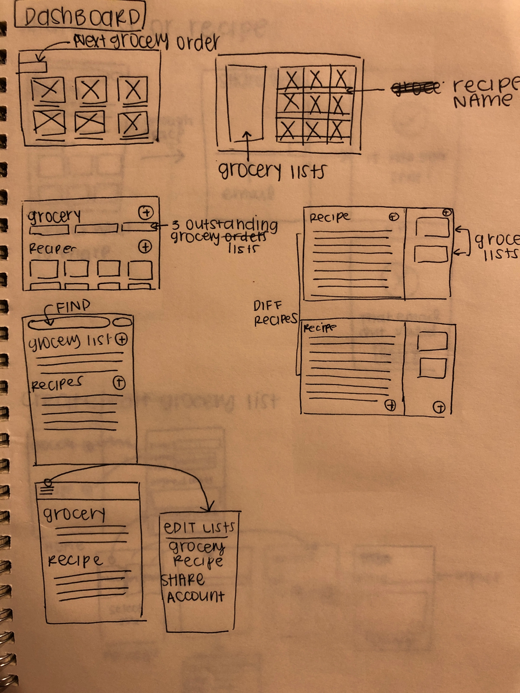
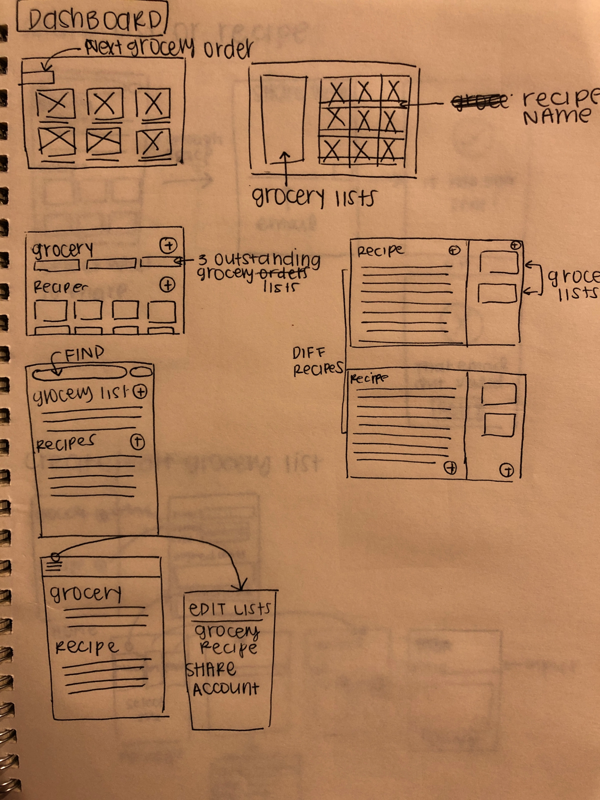
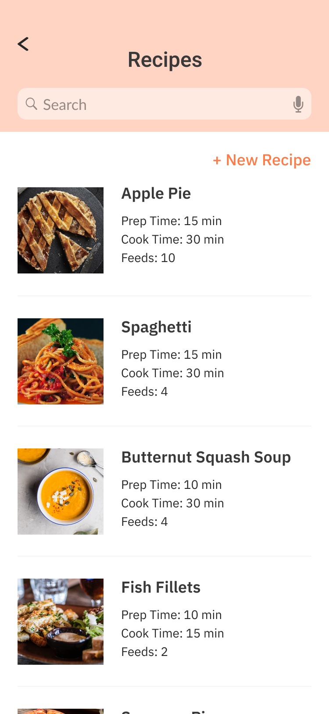
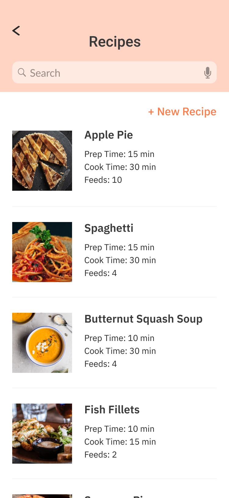

Cauldron
A grocery and recipe app aimed to help shoppers save time at the grocery store
View Prototype
About the project
The problem Shoppers spend more time in the grocery store than is necessary. With that wasted time, they can spend it with their loved ones! ( This was a mock project from Bloc's immersive UX design course )The goal Cutting down shopping time will help people enjoy their saved minutes doing something else!
Project details
Role Lead UX/UI Designer - research, information architecture, interaction design, branding, testingDuration 1 month
Tools Figma, Usability Hub, Google Suite
 



 
